スマスロ攻殻機動隊
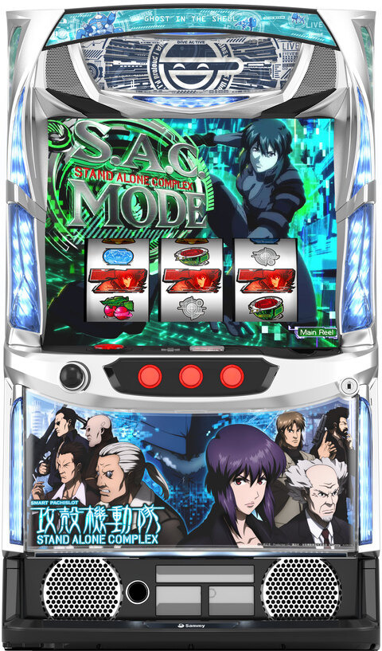
【天井情報】
CZ間最大550G＋α消化で殲滅ゾーンを経由してCZ「S.A.M.」に突入。
設定変更時はCZ天井が最大350G＋αに短縮。
白の境界失敗時は400G＋αに短縮され到達時はCZ「タチコマの家出」に突入。
通常時を999G消化でATに当選。設定変更時はAT天井が699Gに短縮。
【リセット判別】
朝イチリセット時は内部的にゲーム数加算抽選が行われる(加算されない場合もあり?)。
朝イチは設定変更の有無に関わらずゲーム数UIの色が変化せずに前兆が始まる場合あり。
【有利区間について】
差枚数やエンディング等で有利区間がリセットされた際は上位ATへのCZ「白の境界(レベル3)」に突入(仕様からの予想)!?
狙い目
【リセット狙い】
CZ間 60Gから
AT間（CZ間0G想定）360Gから
【ゲーム数天井狙い】
CZ間
0スルー 350Gから
1スルー以降 400Gから
上位AT後（白の境界後）0スルー 200Gから
※白の境界後の判断として、液晶G数と店データ機が5-7Gくらいずれる？データ履歴からは判断出来ない？
AT間（CZ間0G想定）
680Gから
【ゾーン狙い】
200Gゾーン 195Gから（212-214Gくらいで当選有無がわかる）
※150ゾーン狙いについて、ゾーンからの殲滅ゾーン有無でのモード判断が浸透してきた影響かCZ当選率が下がっている傾向です。余程、緩い店舗以外は115-124からのゾーン狙いだけにした方が良さそうです。
※150ゾーン狙いについて、そこそこ緩い店舗で115Gからゾーン狙いをしてもCZ当選するケースが減ってきました。余程、緩い店舗だけに限定して狙うのが良さそうです。
150Gゾーン（下位AT後の0スルー時のみ） 下記画像で前兆の有無を想定して狙う（内部モードで濃厚などの文言は少しずれてるが〇、◎、☆は打てそう）、77G前後は積極派が打つライン。
※下記の狙い目は導入初期の狙い目のため、現在は狙い目として機能しないです。
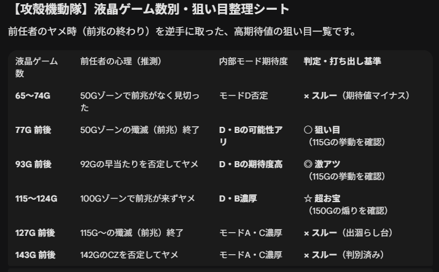
※目視で50Gゾーンからの殲滅ゾーンを確認取れていれば不問で150Gゾーン狙い出来そう。ただし、100Gゾーンで殲滅ゾーンに入った場合は、50GゾーンでモードA.Cの25％を引いていたか、わかりにくいタイミングで殲滅ポイントからの殲滅ゾーンだったと判断して殲滅ゾーンを消化したらやめ。150Gゾーン狙い＝モードDの天井狙い。
【即前兆狙い】
ターゲットとなる台
- 状況： 下位AT終了後、1回目のCZ当選履歴が以下のゲーム数付近の台。
- 60G～71G、80G～90G
- 160G～171G、180G～190G
- 状態： CZ終了後、またはAT終了後に1Gヤメされている台。
具体的な打ち方
- 履歴から「前兆被り」の可能性がある台を探す。
- 3Gほど回して前兆（ざわつき）の有無を確認する。
- 前兆が発生すれば殲滅ゾーン当選まで続行、発生しなければ即ヤメ。
狙い目の根拠（なぜ期待できるか）
履歴の読み方: 上記ゲーム数での当選履歴は、内部的に殲滅ゾーンを保持していた可能性を示唆している。
モードDの恩恵: 下位AT後は約50%でモードD（早い当選）に期待できる。
前兆の重複と潜伏: 「レア役から」と「規定ゲーム数から」が重なった場合、一つ目のCZ終了後に前兆を経由して二つ目の殲滅ゾーンが出てくるという仕様がある。
【示唆関連の押し引きについて】
AT終了画面
紫枠 CZ当選まで？
アイキャッチ
2ndGIG、アオイ CZ当選まで？
タチコマの看板
100pr以上所持なら殲滅ゾーン当選まで？
【有利区間関連狙い】
差枚+1000枚から+1500枚かつ上位AT後、白い境界後では無い台。
0Gから50Gゾーンの殲滅ゾーン突入の有無で押し引き。
殲滅ゾーン無し やめ
殲滅ゾーン有り 150Gゾーンまで
※有利区間切断条件が不明。上位AT後などで切断してる可能性があるため、液晶とデータ機が5-7Gずれている様なら狙えない。（そもそも白い境界後は150Gゾーンが弱い）
やめ時
AT終了後、AT引き戻しゾーン「リブートチャンス」をフォロー。
その後1G回してアイキャッチとタチコマの看板を確認して打てる要素が無ければやめ。
その他
履歴の見方
ART→AT、RB→CZ
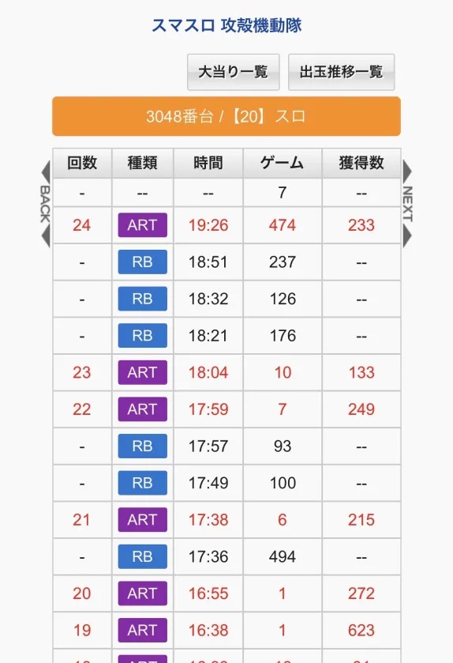
データの見方
AT間はメニュー画面から確認可能。
CZ間はメダル投入してBETすれば確認可能。（東リベと似た感じ）
CZ間はデータ機からも確認可能。
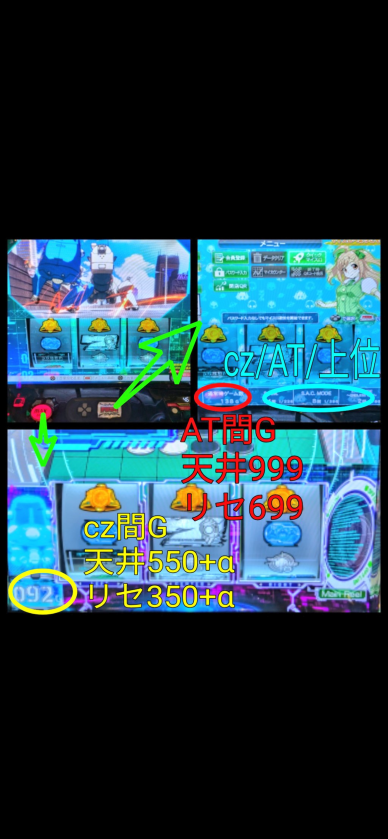
参考元 すろぬー（X）
AT終了画面・隠しPUSH画面
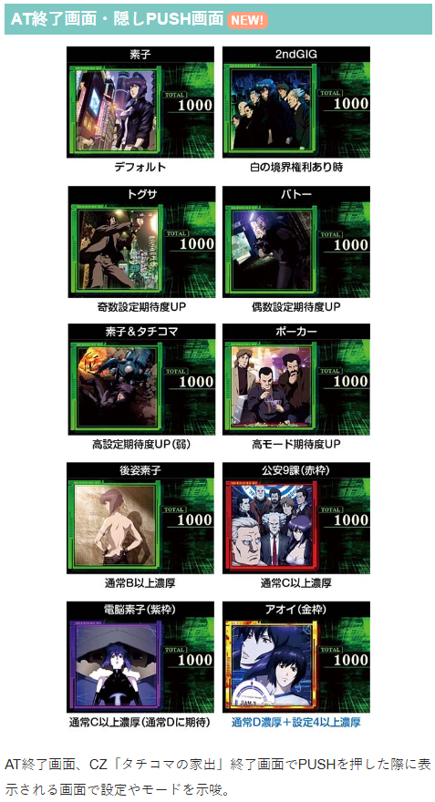
アイキャッチ
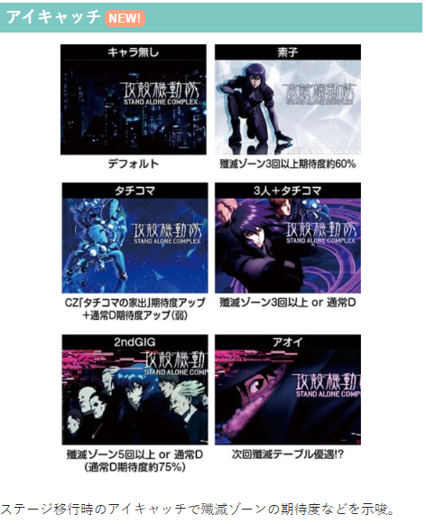
タチコマの看板
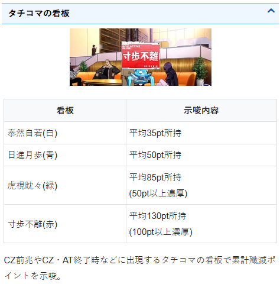
リールフラッシュ
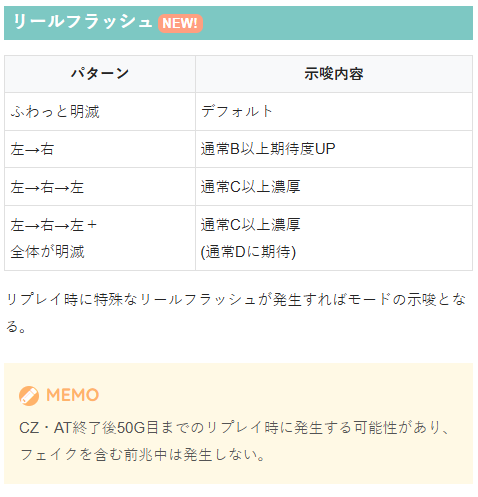
モード別の殲滅ゾーン期待度
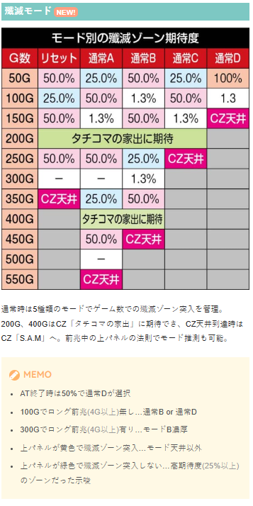
モード毎の天井、殲滅モード移行率
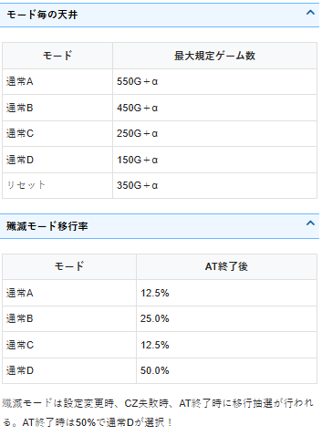
内部状態・ステージ
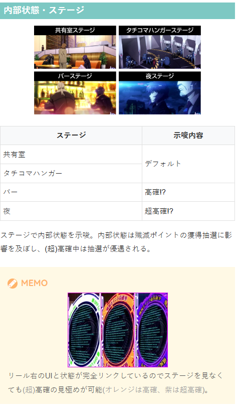
参考元
基本情報
- メーカー: サミー
- 機械割: 97.9% 〜 112.2%
- 導入開始日: 2026年02月02日（月）
- ゲーム性概要: ●レア役・ゲーム数消化でのCZを契機にAT当選を目指すゲーム性 ●AT「S.A.C.モード」は純増約4.0枚/G、初期枚数200枚の差枚数管理型 ●AT中は9種類の「ハック」やレア役など直乗せや特化ゾーンで枚数を上乗せ ●最大500枚獲得で突入する「白の境界チャレンジ」成功で上位CZ「白の境界」の権利を獲得 ●上位CZはAT終了時に突入 ●上位AT「S.A.C.モード エンドレスギグ」は純増約8.5枚/Gで、初期枚数は300枚以上or特化ゾーンで決定 ●上位AT中の上乗せ枚数は300枚以上と、上乗せ性能も超パワーアップ！


打ち方
打ち方・小役
打ち方（小役狙い）
「最初に狙う絵柄」 左リールにBARを狙い、スイカまでスベったら中・右リールにもスイカを狙おう。 レア役はすべてリプレイフラグなので取りこぼしても枚数的な損はないが、当選契機等を判別するために小役狙いを推奨する。
※左リール赤7狙いでもOK
「スイカ停止時」 左リールにもスイカを狙う（いずれも青7or赤7目安）。
「レア役の停止例」
「中or右リール狙え発生時」 中リールor右リールに指示された絵柄（白7orBAR）を狙う。ラフ目停止で成功となり恩恵を獲得、強ラフ目は強い恩恵獲得に期待できる。
「ラフ目・強ラフ目」 ラフ目停止後、残りのリールにも白7やBARを狙い、ひし形に止まれば強ラフ目。
変則押しはNG
通常時・押し順ナビなし時は左第1停止での消化を推奨する。
左リール白7狙い（小役狙い）
「最初に狙う絵柄」 左リールに白7を狙う。 白7の下のブランク（13番）が下段に止まればリプレイorチェリー（強弱は判別不可）。4コマスベリで中段に13番のブランク停止で強チェリー1確となる。
「チェリーの停止例」
※レア役はすべてリプレイフラグなので、取りこぼしても損はしない
左リール青7狙い（小役狙い）
「最初に狙う絵柄」 左リールに青7を狙う。 枠内に青7が止まれば小役以上濃厚で、ベルが中段までスベるとスイカ濃厚だ。
「レア役の停止例」
※レア役はすべてリプレイフラグなので、取りこぼしても損はしない
解析情報通常時
小役関連
小役確率
| 役 | 確率 |
|---|---|
| リプレイ | 1/9.6 |
| スイカ | 1/99.9 |
| 弱チャンス目 | 1/105.7 |
| 強チャンス目 | 1/546.1 |
| 弱チェリー | 1/99.9 |
| 強チェリー | 1/546.1 |
| 押し順ベルA合算 | 1/3.4 |
| 押し順ベルB合算 | 1/2.3 |
| 共通ベル（上段） | 1/12.0 |
| 共通ベル（右下がり） | 1/27.3 |
※レア役合算確率は1/31.9
白7orBARを狙え（回胴HACK）
CZ中やAT中などに白7もしくは、BARを狙えが発生する可能性あり。ラフ目or強ラフ目が止まれば成功となり恩恵を獲得できる。強ラフ目なら上位恩恵獲得のチャンスだ。
白7orBARを狙えのラフ目停止期待度
| 狙え | 期待度 | |
|---|---|---|
| 白7 | 中リール | 67.4% |
| 白7 | 右リール | 65.5% |
| BAR | 中リール | 40.5% |
| BAR | 右リール | 40.5% |
| トータル期待度 | 57.1% |
（強）ラフ目が止まるかどうかは成立したフラグで完全に決まっていて、内部的なフラグが押し順ベルB以外であれば必ず成功。リプレイやレア役成立時は白7を狙えが発生するため、白7を狙えの方が成功期待度が高い。
成立フラグとラフ目の種類
| 成立フラグ | ラフ目の種類 | 狙えの種類 |
|---|---|---|
| リプレイ | ラフ目停止 | 白7 |
| スイカ | ラフ目停止 | 白7 |
| 弱チャンス目 | ラフ目停止 | 白7 |
| 強チャンス目 | 強ラフ目停止 | 白7orBAR |
| 弱チェリー | ラフ目停止 | 白7 |
| 強チェリー | 強ラフ目停止 | 白7orBAR |
| 押し順ベルA | ラフ目停止 | 白7orBAR |
| 押し順ベルB | 失敗 | 白7orBAR |
| 共通3枚ベル | ラフ目停止 | 白7 |
| 共通1枚ベル | ラフ目停止 | 白7 |
内部状態関連
高確・超高確解説
通常時はレア役を契機に殲滅ポイントの貯まりやすさが異なる高確・超高確への移行を抽選。 BARステージは高確示唆、夜ステージを超高確を示唆している。
高確・超高確性能
| 移行契機 | レア役の一部 |
|---|---|
| 継続ゲーム数 | 15G＋α |
| 消化中の抽選 | 通常＜高確＜超高確の順で 殲滅ポイント獲得率がアップ |
| 備考 | 保障15G消化後は ハズレ・ベル・リプレイで転落抽選 |
内部状態移行率 通常中
| 役 | 通常のまま | 高確へ | 超高確へ |
|---|---|---|---|
| ハズレ | 100% | ー | ー |
| 共通ベル | 100% | ー | ー |
| リプレイ | 100% | ー | ー |
| スイカ | 50.0% | 48.8% | 1.3% |
| 弱チェリー | 75.0% | 23.8% | 1.3% |
| 弱チャンス目 | 100% | ー | ー |
| 強チャンス目 | 100% | ー | ー |
| 強チェリー | 50.0% | 50.0% | ー |
高確中
| 役 | 通常へ | 高確のまま | 超高確へ |
|---|---|---|---|
| ハズレ | 25.0% | 75.0% | ー |
| 共通ベル | 25.0% | 75.0% | ー |
| リプレイ | 25.0% | 75.0% | ー |
| スイカ | ー | 75.0% | 25.0% |
| 弱チェリー | ー | 87.5% | 12.5% |
| 弱チャンス目 | ー | 100% | ー |
| 強チャンス目 | ー | 100% | ー |
| 強チェリー | ー | 50.0% | 50.0% |
超高確中
| 役 | 通常へ | 高確へ | 超高確のまま |
|---|---|---|---|
| ハズレ | 12.5% | 12.5% | 75.0% |
| 共通ベル | 12.5% | 12.5% | 75.0% |
| リプレイ | 12.5% | 12.5% | 75.0% |
| スイカ | ー | ー | 100% |
| 弱チェリー | ー | ー | 100% |
| 弱チャンス目 | ー | ー | 100% |
| 強チャンス目 | ー | ー | 100% |
| 強チェリー | ー | ー | 100% |
高確・超高確移行後は15Gの保障ゲーム数消化後から、転落が抽選される。
モード
殲滅モード
| 殲滅モード | CZ天井ゲーム数 |
|---|---|
| リセット | 350G＋α |
| 通常A | 550G＋α |
| 通常B | 450G＋α |
| 通常C | 250G＋α |
| 通常D | 150G＋α |
CZの天井ゲーム数と規定ゲーム数消化時のCZ当選期待度に関わるモード。最大550G＋α消化でCZ当選濃厚の殲滅ゾーンに当選する。 白の境界失敗後はモード不問で最大天井が400G＋αかつ、タチコマS.A.M.濃厚になる。
モードごとのゾーン期待度
| ゲーム | リセット | 通常A | 通常B | 通常C | 通常D |
|---|---|---|---|---|---|
| 50G | 50.0% | 25.0% | 50.0% | 25.0% | 100% |
| 100G | 25.0% | 50.0% | 1.3% | 50.0% | 1.3% |
| 150G | 50.0% | 1.3% | 50.0% | 1.3% | CZ天井 |
| 200G | タチコマS.A.M.に期待 | ||||
| 250G | 50.0% | 50.0% | 25.0% | CZ天井 | |
| 300G | ー | ー | 1.3% | ||
| 350G | CZ天井 | 25.0% | 50.0% | ||
| 400G | タチコマS.A.M.に期待 | ||||
| 450G | 50.0% | CZ天井 | |||
| 500G | ー | ||||
| 550G | CZ天井 |
白の境界失敗後は、200Gか400GのいずれかでタチコマS.A.M.に当選する。
［AT終了後］殲滅モード移行率
| 殲滅モード | 移行率 |
|---|---|
| 通常A | 12.5% |
| 通常B | 25.0% |
| 通常C | 12.5% |
| 通常D | 50.0% |
AT後は87.5%で通常B以上、50%で通常Dへ移行するため、次のCZ当選まで打った場合の機械割は100%を超える。
殲滅ポイント
殲滅ポイント概要
成立役に応じて獲得するポイントで、150ptを貯めると殲滅ゾーンに当選。基本はレア役での獲得だが、高確中は小役成立で必ずポイント獲得、超高確中はハズレでも約50%でポイントを獲得できる。
殲滅ポイント
| 獲得契機 | おもにレア役 （滞在状態によっては小役やハズレでも獲得） |
|---|---|
| 150pt獲得時 | 殲滅ゾーンに当選 |
滞在状態ごとのポイント獲得契機
| 状態 | 契機 |
|---|---|
| 通常 | レア役で獲得 |
| 高確 | 小役揃いで獲得 |
| 超高確 | 小役以上で獲得、 ハズレでも約50%で獲得 |
※強チャンス目、強チェリーは50pt以上獲得濃厚
初期殲滅ポイント振り分け
| ポイント | 振り分け |
|---|---|
| 0pt | 約75% |
| 50pt | 約20% |
| 100pt | 約5% |
殲滅ゾーン当選後は初期ポイントを抽選していて、最大で100ptを持ってスタート。設定変更時は初期ポイントにランダムでポイントが加算される。
恩恵振り分け 殲滅チャンス時
| 役 | CZ | AT | ボーナス （RED） | ボーナス （BLUE） |
|---|---|---|---|---|
| ハズレ | 100% | ー | ー | ー |
| 共通ベル・リプレイ | ー | 100% | ー | ー |
| 弱レア役 | ー | ー | 98.8% | 1.3% |
| 強チャンス目 | ー | ー | 75.0% | 25.0% |
| 強チェリー | ー | ー | 50.0% | 50.0% |
殲滅チャンスハイパー時
| 役 | CZ | AT | ボーナス （RED） | ボーナス （BLUE） |
|---|---|---|---|---|
| ハズレ | ー | 100% | ー | ー |
| 共通ベル・リプレイ | ー | 50.0% | 50.0% | ー |
| 弱レア役 | ー | ー | 75.0% | 25.0% |
| 強チャンス目 | ー | ー | 50.0% | 50.0% |
| 強チェリー | ー | ー | ー | 100% |
※ボーナス…S.A.C.ボーナス
レア役を引けばボーナス濃厚。ハイパー時はハズレでもAT濃厚になる。
殲滅ゾーン
殲滅ゾーン概要
規定ゲーム数消化や殲滅ポイントを契機に突入する発展先決定ゾーンで、消化中は7G＋αの小役で撃破数を獲得していき、最終的な撃破数に応じて恩恵を決定。 撃破数ごとの恩恵は7種類のテーブルによって変化する。
殲滅ゾーン性能
| 当選契機 | 規定ゲーム数消化での抽選、 殲滅ポイント150pt以上獲得時 |
|---|---|
| 継続ゲーム数 | 7G＋α（8G目以降の撃破非当選で終了） |
| 消化中の抽選 | 成立役に応じて撃破数をアップ、 最終的な撃破数で恩恵を決定 |
殲滅テーブルごとの恩恵パターン
| 撃破数 | テーブル1 | テーブル2 | テーブル3 | |||
|---|---|---|---|---|---|---|
| ～19 | 白 | 青 | 青 | |||
| 20～39 | 青 | 緑 | 緑 | |||
| 40～59 | 緑 | 緑 | 赤 | |||
| 60～79 | 赤 | 赤 | 赤 | |||
| 80～99 | 紫 | 紫 | 紫 | |||
| 100～ | 金 | 金 | 金 | |||
| 撃破数 | テーブル4 | テーブル5 | テーブル6 | テーブル7 | ||
| ～19 | 青 | 緑 | 赤 | 紫 | ||
| 20～39 | 緑 | 赤 | 紫 | 金 | ||
| 40～59 | 赤 | 紫 | 金 | 金 | ||
| 60～79 | 紫 | 金 | 金 | 金 | ||
| 80～99 | 金 | 金 | 金 | 金 | ||
| 100～ | 虹 | 虹 | 虹 | 虹 |
最終的なアイコン色ごとの恩恵
| 色 | 恩恵 | 期待度・報酬 |
|---|---|---|
| 白 | 白バトル | 低 |
| 青 | 青バトル | 低 |
| 緑 | 緑屋上 | CZ期待度20%以上 |
| 赤 | 赤屋上 | CZ期待度55%以上 |
| 紫 | ラッフィングマンルーム | CZ期待度75%以上 |
| 金 | 殲滅チャンス | CZ以上濃厚、 1Gで小役を引けばAT当選 |
| 虹 | 殲滅チャンスハイパー | AT以上濃厚、 1Gで小役を引けば ボーナスのチャンス |
［撃破数獲得］
「殲滅チャンス」 1Gで小役を引けばAT当選。小役非成立時はCZへ移行する。
殲滅チャンス獲得時の特殊抽選
| 殲滅チャンス獲得時 | 12.5%で虹恩恵へ昇格 |
|---|---|
| 150pt～ | 虹への昇格濃厚 |
抽選結果は必ず告知されるわけではないため、見た目は殲滅チャンスだが、内部的には殲滅チャンスハイパーというケースがある。
「殲滅チャンスハイパー」 AT当選濃厚。1Gで小役を引ければS.A.C.ボーナスに当選する。
撃破数振り分け
| 撃破数 | ハズレ | 共通ベル | リプレイ | スイカ |
|---|---|---|---|---|
| 1体 | 15.8% | ー | ー | ー |
| 3体 | 40.0% | ー | ー | ー |
| 5体 | 33.3% | ー | ー | ー |
| 10体 | 10.4% | 78.8% | 50.0% | ー |
| 20体 | ー | 12.5% | 40.0% | ー |
| 30体 | ー | 5.0% | 3.3% | 81.3% |
| 40体 | ー | 2.5% | 3.3% | 12.5% |
| 50体 | 0.4% | 1.3% | 3.3% | 5.0% |
| 100体 | ー | ー | ー | 1.3% |
| 撃破数 | 弱チェリー | 弱チャンス目 | 強チャンス目 | 強チェリー |
| 1体 | ー | ー | ー | ー |
| 3体 | ー | ー | ー | ー |
| 5体 | ー | ー | ー | ー |
| 10体 | ー | ー | ー | ー |
| 20体 | ー | ー | ー | ー |
| 30体 | 81.3% | 81.3% | ー | ー |
| 40体 | 12.5% | 12.5% | ー | ー |
| 50体 | 5.0% | 5.0% | 50.0% | 33.3% |
| 100体 | 1.3% | 1.3% | 50.0% | 66.7% |
ルーレット演出でバトー選択時は、上記の振り分けに＋1〜9体がランダムで加算される。
「戦闘激化演出」 残りゲーム数が奇数（7・5・3・1G）時のデフォルト。
「ルーレット演出」 残りゲーム数が偶数（6・4・2G）時のデフォルト。
ゲーム数と発生する演出が矛盾すると大量撃破のチャンス!? 残りゲーム数が？時に演出が発生すれば撃破＋継続濃厚だ。
CZ
S.A.M.（スタンドアローンミッション）
11G＋αのCZ。小役で回胴HACKを発生させ、ラフ目を止めてステージを進めていくゲーム性。最終的なステージに応じてAT期待度が変化していき、ラストの連続演出成功でAT当選濃厚となる。
S.A.M.性能
| 当選契機 | 殲滅ゾーンの恩恵 |
|---|---|
| 継続ゲーム数 | 11G＋α |
| 消化中の抽選 | 小役で回胴HACKを発生させ、 ラフ目停止でステージが進行 |
| トータルAT期待度 | 52.6% |
| 備考 | ラストの連続演出中はレア役成立でAT当選 |
最終的なステージごとのAT期待度
| ステージ | 当選率 | 書き換え込みの期待度 |
|---|---|---|
| ステージ1 | 低 | 19.7% |
| ステージ2 | 50.0% | 59.6% |
| ステージ3 | 80.0% | 84.0% |
| ステージ4 | 100% | 100% |
ラフ目が停止するたびにステージが1段階ずつ進行し、最終的なステージでATを抽選。内部的にAT非当選の場合でも、連続演出中にレア役を引けばAT当選に書き換えられる。
「エピソードの種類」 エピソードは暴走の証明と恵まれし者たちの2種類。この2種類に期待度の差はなく、基本的には交互に発生する。同一エピソードが2連続した場合は設定2以上濃厚だ。
［暴走の証明］
［恵まれし者たち］
回胴HACK発生率
| 役 | 発生率 |
|---|---|
| 共通ベル | 40.0% |
| リプレイ | 40.0% |
| レア役 | 100% |
小役入賞でチャンス、レア役は回胴HACK発生濃厚。次ゲームでラフ目が止まればステージが進行する。
導入エピソード中・ステージ進行当選率
| 役 | 当選率 |
|---|---|
| 弱レア役 | 3.3% |
| 強レア役 | 100% |
導入エピソード中のレア役では、ステージの進行を抽選する。
タチコマの家出（タチコマS.A.M.）
15G間、全役でEXPをためていき、最終的なEXPでATを抽選。タチコマの家出契機のAT当選時はリブートチャンスの引き戻しをストックする。
タチコマの家出（タチコマS.A.M.）性能
| 当選契機 | 規定ゲーム数消化時の抽選 |
|---|---|
| 継続ゲーム数 | 15G |
| 消化中の抽選 | 成立役に応じてEXPを貯めるほどAT期待度アップ |
| AT期待度 | 約65% |
タチコマS.A.M.当選率 （200Gor400Gで当選する期待度）
「EXP獲得」
EXP獲得率
| EXP | ハズレ | ベル | リプレイ | |
|---|---|---|---|---|
| 非当選 | 93.8% | ー | ー | |
| 50EXP | 5.0% | 78.3% | ー | |
| 100EXP | 1.3% | 12.5% | 90.8% | |
| 200EXP | ー | 5.0% | 5.0% | |
| 300EXP | ー | 2.5% | 2.5% | |
| 500EXP | ー | 1.3% | 1.3% | |
| 1000EXP | ー | 0.4% | 0.4% | |
| EXP | 弱レア役 | 強レア役 | ||
| 非当選 | ー | ー | ||
| 50EXP | ー | ー | ||
| 100EXP | ー | ー | ||
| 200EXP | 64.2% | ー | ||
| 300EXP | 25.0% | ー | ||
| 500EXP | 10.0% | 50.0% | ||
| 1000EXP | 0.8% | 50.0% |
獲得EXPを1/10した数字がおおよそのAT期待度（300EXPなら約30%、700EXPなら約70%）なので、1000pt到達でAT濃厚。 S.A.M.と同様に、非当選でもラストの連続演出中にレア役を引けば成功濃厚となる。
最終的なEXPごとのAT当選率
| EXP | 当選率 |
|---|---|
| 0EXP | 100% |
| 50EXP | 100% |
| 100EXP | 100% |
| 150EXP | 25.0% |
| 200EXP | 25.0% |
| 250EXP | 25.0% |
| 300EXP | 33.3% |
| 350EXP | 40.0% |
| 400EXP | 45.0% |
| 450EXP | 50.0% |
| 500EXP | 55.0% |
| 550EXP | 60.0% |
| 600EXP | 65.0% |
| 650EXP | 70.0% |
| 700EXP | 75.0% |
| 750EXP | 80.0% |
| 800EXP | 85.0% |
| 850EXP | 90.0% |
| 900EXP | 95.0% |
| 950EXP | 100% |
| 1000EXP | 100% |
100EXP以下、950EXP以上はAT当選濃厚だ。
「ミキ出現でAT当選！」 演出の種類は不問で、ミキが出現すればAT濃厚だ。
［導入エピソード中の抽選］
導入エピソード中・一発成功当選率
| 役 | 当選率 |
|---|---|
| 弱レア役 | 3.3% |
| 強レア役 | 約50% |
導入エピソード中はレア役で一発成功を抽選。この一発抽選に受かった場合と、CZ中にEXPを1000貯めた場合はS.A.C.ボーナスRED当選に期待できるぞ。
HACK
視覚HACK
通常時開始時（通常モード決定時）に設定に応じて「S.A.M.視覚フラグ」の獲得を抽選。このフラグを持っていればCZ失敗時（失敗の次ゲーム）に必ず視覚HACKが発生＝アオイが登場してATに当選する（S.A.M.とタチコマS.A.M.のどちらも有効）。 フラグはAT当選で消失。 通常時の演出に「S.A.M.視覚フラグ」ありを示唆するパターンが存在する。
S.A.M.視覚フラグ
| フラグ獲得契機 | 通常時開始時の抽選 |
|---|---|
| フラグあり時の恩恵 | CZ失敗を成功に書き換え |
| フラグの消失契機 | AT当選（AT当選契機は不問） |
直撃抽選
AT直撃抽選
AT直撃当選契機一覧
AT間天井到達 （最大999G、設定変更時は699G）
リールロック2段階＋弱レア役成立時
ロングフリーズ発生時（S.A.C.ボーナスBLUEを経由）
CZ前兆中の直撃抽選
通常時からのAT直撃ルートは4つ（天井を含む）。CZを経由しての当選が基本で、直撃はレアパターンだ。
フリーズ
ロングフリーズ
| 確率 | 1/65536 |
|---|---|
| 発生タイミング | 通常時だけでなくAT中も発生する可能性あり |
| 恩恵 | S.A.C.ボーナスBLUE＋ 電脳モード超特A級を経由してATへ突入 |
ロングフリーズ動画
発生確率は約1/65536。
通常時だけでなくAT中も発生の可能性があり、発生時はS.A.C.ボーナスBLUE＋電脳モード超特A級を経由してATへ突入する。
解析情報ボーナス時
S.A.C.ボーナス
S.A.C.ボーナス概要
20G継続の擬似ボーナスで、消化中はリプレイとレア役成立で上乗せ濃厚。 RED（赤7揃い）とBLUE（青7揃い）の2種類がある。ボーナス中の性能自体は共通だが、REDは電脳モード、BLUEは電脳モード超特A級を経由してATに突入する。
S.A.C.ボーナス性能
| 当選契機 | 殲滅チャンスやCZ成功時の一部、 ロングフリーズ後（BLUE濃厚） |
|---|---|
| 継続ゲーム数 | 20G |
| 消化中の抽選 | リプレイとレア役でATの枚数上乗せ |
| RED後 | 電脳モードを経由してATへ |
| BLUE後 | 電脳モード超特A級を経由してATへ |
上乗せ枚数振り分け
| 上乗せ | リプレイ | スイカ | 弱チェリー 弱チャンス目 | 強チェリー 強チャンス目 |
|---|---|---|---|---|
| ＋20枚 | 100% | ー | 52.5% | ー |
| ＋30枚 | ー | 85.8% | 33.3% | ー |
| ＋50枚 | ー | 12.5% | 12.5% | 96.7% |
| ＋100枚 | ー | 1.3% | 1.3% | 1.7% |
| ＋200枚 | ー | 0.4% | 0.4% | 0.8% |
| ＋300枚 | ー | ー | ー | 0.4% |
| ＋500枚 | ー | ー | ー | 0.4% |
リプレイ・レア役は上乗せ濃厚で、1契機の最大上乗せ枚数は500枚だ。
S.A.C.モード（AT）
AT概要
差枚数管理型のAT。初期枚数は200枚で、レア役での直乗せや特化ゾーンで枚数を上乗せしていく。色ベル（赤頭or青頭）3連での内部状態昇格やCZ抽選もあり。 最大500枚獲得ごとに上位CZのチャンスとなる白の境界チャレンジを獲得するため、まずは500枚獲得を目指そう。
AT性能
| 当選契機 | 直撃抽選、CZ成功 |
|---|---|
| 枚数 | 200枚＋α（引き戻し時は特化ゾーンで決定） |
| 1Gあたりの純増 | 約4.0枚 |
| 色ベル3連時の抽選 | 内部状態昇格、 S9M、直乗せ抽選 |
| レア役時の抽選 | 内部状態昇格、直乗せ、S9M抽選 |
| 備考 | 大量上乗せに期待できるHACKあり |
「色ベル」 AT中の押し順ベルは完全ナビではなく、基本的に色ベル（色目押しベル）はナビされない。 色ナビの発生確率は 1/8.8 で、一度ナビが発生すると、次ゲームから色ベルが成立する限り必ずナビが発生。初回の色ナビ発生後は色ナビが発生しやすい状態になって、そこから2G連続で色ナビを引ければ色ナビ3連で、各種抽選を受けることができる。 色ベルの種類は、異色3連＜赤3連＜青3連の順に期待度が高い。
色ベルの抽選まとめ
| 色ベル | 抽選値 |
|---|---|
| 初回色ナビ確率 | 1/8.8 |
| ベル連中の色ナビ確率 | 1/1.39 |
| 色ベル3連確率 | 1/20.4 |
［色ベル3連でチャンス！］ 色ベル成立時はリール右側のアイコンで継続数とナビの色を表示。アイコンが3つ貯まれば（色ナビを3G連続で引けば）色ベル3連になる。
色ベル3連での抽選
色ベル3連時の抽選内容
高確移行（高確中は高確ゲーム数の加算）
S9M
衝撃HACK（枚数直乗せ）
色ベル3連時の各種当選率
| 内部状態 | ナビ | 当選率 |
|---|---|---|
| 通常 | 異色ナビ3連 | 約25%で高確移行 |
| 通常 | 赤ナビ3連 | 約20%でS9M |
| 通常 | 青ナビ3連 | 約40%でS9M |
| 高確 | 異色ナビ3連 | 約25%で高確ゲーム数加算 |
| 高確 | 赤ナビ3連 | 約50%でS9M |
| 高確 | 青ナビ3連 | 約75%でS9M |
赤ベル3連は弱チャンス目相当、青ベル3連は強チャンス目相当の抽選が受けられる。
同色ナビ3連時・衝撃HACK発生率
| 上乗せ | 赤ナビ3連 | 青ナビ3連 |
|---|---|---|
| ＋100枚 | 1.3% | 2.5% |
| ＋200枚 | 0.4% | 0.8% |
| ＋300枚 | 0.4% | 0.8% |
| ＋500枚 | 0.4% | 0.8% |
| トータル | 2.5% | 5.0% |
S9Mとダブル抽選なので、上乗せを獲得しつつ、S9Mにも当選する可能性あり。
衝撃HACK当選時の上乗せ枚数振り分け
| 上乗せ | 振り分け |
|---|---|
| ＋100枚 | 50.00% |
| ＋200枚 | 16.67% |
| ＋300枚 | 16.67% |
| ＋500枚 | 16.67% |
直乗せ当選率は低いが、当選時は＋100枚以上濃厚だ（衝撃HACKが発生）。
高確移行率
| 役 | 移行率 |
|---|---|
| 異色の色ナビ3連 | 25.0% |
| スイカ | 66.7% |
| 弱チェリー | 20.0% |
高確中は色ベル3連やレア役成立時のS9M当選率がアップ。レア役と色ベル3連で高確移行が抽選される。 高確には16G以上の保障ゲーム数があり、高確中の色ベル3連やレア役では高確ゲーム数加算抽選がおこなわれる。
「通常」
「高確」
枚数上乗せ当選率
| 役 | リールロック | 上乗せ | 衝撃HACK | EX HACK |
|---|---|---|---|---|
| 弱レア役 | なし | 11.3% | 1.3% | ー |
| 弱レア役 | 1段階 | 50.0% | 50.0% | ー |
| 弱レア役 | 2段階 | ー | 87.5% | 12.5% |
| 強レア役 | なし | 87.5% | 12.1% | 0.4% |
| 強レア役 | 1段階 | 25.0% | 74.2% | 0.8% |
| 強レア役 | 2段階 | ー | 97.5% | 2.5% |
成立役に応じて上乗せの当否を抽選した後、枚数を抽選する2段階方式。強レア役は上乗せ濃厚で、弱レア役でもリールロックが絡めば上乗せ濃厚となる。
上乗せ時・上乗せ枚数振り分け リールロックなし時
| 上乗せ | スイカ | 弱チェリー 弱チャンス目 | 強レア役 |
|---|---|---|---|
| ＋10枚 | ー | 63.0% | ー |
| ＋20枚 | ー | ー | ー |
| ＋30枚 | 63.0% | 32.8% | 85.7% |
| ＋50枚 | 35.1% | 3.7% | 13.6% |
| ＋100枚 | 1.9% | 0.5% | 0.7% |
リールロックあり時
| 上乗せ | スイカ | 弱チェリー 弱チャンス目 | 強レア役 |
|---|---|---|---|
| ＋10枚 | ー | ー | ー |
| ＋20枚 | ー | ー | ー |
| ＋30枚 | ー | 88.8% | ー |
| ＋50枚 | 95.0% | 10.0% | 95.0% |
| ＋100枚 | 5.0% | 1.3% | 5.0% |
衝撃HACK時・上乗せ枚数振り分け
| 上乗せ | スイカ以外 | スイカ |
|---|---|---|
| ＋100枚 | 50.0% | ー |
| ＋200枚 | 37.5% | 73.8% |
| ＋300枚 | 10.0% | 25.0% |
| ＋500枚 | 2.5% | 1.3% |
EX HACK時は＋1000枚以上濃厚だ。
HACK（AT中）
HACKの種類
| 種類 | 内容 |
|---|---|
| 回胴HACK | 1Gのガチジャッジ、ラフ目停止で恩恵獲得 |
| 衝撃HACK | 上乗せ枚数を超変換 |
| EX HACK | 4桁枚数上乗せ濃厚 |
| 押し順HACK | 特化ゾーン突入 |
| マルチHACK | 3つの数字を掛け算上乗せ（電脳モード専用） |
| 視覚HACK | 展開を書き換え |
| WHITE HACK | 発生した時点で大チャンス |
| 停止HACK | 突然ボタンが反応しなくなる |
| マイスロHACK | マイスロ専用のHACK |
全9種類のHACKがあり、さまざまなタイミングで発生。AT中のHACKは大量上乗せに期待できるぞ。
※マイスロHACKは通常時専用
［回胴HACK］
［衝撃HACK］
リールロックをともなうレア役成立時は衝撃HACKに期待！
［EX HACK］ リールロック2段階後はEX HACKにも期待できる。
［押し順HACK］
［マルチHACK］
［視覚HACK］
AT中の視覚HACKの発生タイミングと恩恵
| タイミング | 恩恵 |
|---|---|
| S9M失敗時 | 電脳モード当選 |
| 電脳モード終了時 | 電脳モードを再セット |
※発生条件・抽選値等は調査中
［WHITE HACK］
［停止HACK］
［マイスロHACK］
押し順HACK発生確率
| 赤7揃い（電脳モード） | 約1/938 |
|---|---|
| 青7揃い（電脳モード超特A級） | 約1/21845 |
| 合算 | 約1/899 |
押し順HACKは電脳モード突入時専用のHACK演出で、押し順ナビ系の違和感演出などから発生する。
セクション9ミッション（S9M）
S9M概要
8G＋αのCZ。小役で回胴HACKの発生を抽選し、回胴HACKでラフ目が止まれば成功となる。
S9M性能
| 当選契機 | AT中の色ベル3連やレア役での抽選 |
|---|---|
| 継続ゲーム数 | 8G＋α |
| 消化中の抽選 | 小役で回胴HACKを抽選、 回胴HACK時にラフ目が止まれば特化ゾーン濃厚 |
| 成功期待度 | 約40～90%（エピソードで変化） |
| ラフ目で成功時 | 電脳モード |
| 強ラフ目で成功時 | 電脳モード超特A級 |
| 強レア役成立時 | 特化ゾーン当選濃厚 |
| 備考 | 弱レア役・最終ゲームの小役揃いは回胴HACK発生 |
「エピソードの種類」 エピソードはS9M当選時に決定する。
スイカ契機で当選したS9Mは孤城落日（緑）or硝煙弾雨（赤）濃厚だ。
S9M当選率
| 役 | 通常中 | 高確中 |
|---|---|---|
| 異色の色ナビ3連 | 1.3% | 3.8% |
| 赤ナビ3連 | 18.8% | 50.2% |
| 青ナビ3連 | 40.0% | 75.0% |
| スイカ | 2.5% | 10.0% |
| 弱チェリー | 5.0% | 25.0% |
| 弱チャンス目 | 10.0% | 40.0% |
| 強チャンス目 | 40.0% | 75.0% |
| 強チェリー | 66.7% | 100% |
回胴HACK発生率
| 役 | 模倣者は～ | 置き去り～ | 孤城落日 | 硝煙弾雨 |
|---|---|---|---|---|
| ハズレ | ー | ー | ー | 10.0% |
| 共通ベル | 5.4% | 10.4% | 33.3% | 100% |
| リプレイ | 40.0% | 60.0% | 80.0% | 100% |
| スイカ | 100% | 100% | 100% | 100% |
| 弱チェリー | 100% | 100% | 100% | 100% |
| 弱チャンス目 | 100% | 100% | 100% | 100% |
※最終ゲームは小役成立で回胴HACK濃厚
強レア役は成功濃厚となるため、回胴HACKは発生しない。 硝煙弾雨（赤）のエピソード中のみ、最終ゲームは成立役不問で必ず回胴HACKが発生する。
電脳モード
電脳モード概要
7G＋αの上乗せ特化ゾーンで、成立役に応じた上乗せ抽選がおこなわれる。青ナビ発生時は電脳モード専用のHACK「マルチHACK」が発生するので、青ナビのヒキで上乗せ枚数が大きく変化する。
電脳モード性能
| 当選契機 | S9M成功時、S.A.C.ボーナスRED後 |
|---|---|
| 継続ゲーム数 | 7G＋α（7G消化後の赤ナビorハズレで終了） |
| リプレイ成立時 | 画面分割（次ゲームの上乗せが優遇） |
| 青ナビ発生時 | マルチHACK濃厚 |
| レア役成立時 | 上乗せ以上濃厚（衝撃orEX HACKに期待） |
| 平均上乗せ枚数 | 210枚 |
「画面分割」 リプレイ成立時は、画面が2〜3分割されて次ゲームの上乗せ抽選が2〜3倍にアップ。分割状態は1Gのみで、青ナビやレア役を引けなければ上乗せ非当選となる。
「マルチHACK」 青ナビを引けば必ず発生。3つの数字を掛け算して、合計枚数を上乗せする。
マルチHACKの数字パターン
| 左＆中 | 右 |
|---|---|
| 2×2 | ×5 |
| 2×3 | ×10 |
| 3×3 | ×30 |
2×5
3×5
2×10
5×5
3×10
5×10
10×10
2×2×5＝20枚〜10×10×30＝3000枚が、1契機の上乗せ枚数。
レア役成立時の衝撃orEX HACK発生率
| 役 | 発生率 |
|---|---|
| 弱レア役 | 約50% |
| 強レア役 | 約75% |
| 笑い男マーク付きの リールロック→レア役 | 100% |
電脳モード超特A級
基本的なゲーム性は電脳モードと同じだが、上乗せ抽選が大きく優遇されている。
電脳モード超特A級性能
| 当選契機 | S9M成功時、S.A.C.ボーナスBLUE後 |
|---|---|
| 継続ゲーム数 | 7G＋α（7G消化後の赤ナビorハズレで終了） |
| リプレイ成立時 | 画面分割（次ゲームの上乗せが優遇） |
| 青ナビ発生時 | マルチHACK濃厚 |
| レア役成立時 | 上乗せ以上濃厚（衝撃orEX HACKに期待） |
| 平均上乗せ枚数 | 630枚 |
左＆中の数字の組み合わせ振り分け
| 組み合わせ | 振り分け |
|---|---|
| 2×2 | 58.3% |
| 2×3 | 13.3% |
| 3×3 | 6.7% |
| 2×5 | 5.0% |
| 3×5 | 4.2% |
| 2×10 | 3.3% |
| 5×5 | 3.3% |
| 3×10 | 3.3% |
| 5×10 | 1.7% |
| 10×10 | 0.9% |
右の数字の振り分け
| 数字 | 電脳モード | 電脳モード超特A級 |
|---|---|---|
| ×5 | 90.0% | ー |
| ×10 | 9.6% | 95.0% |
| ×30 | 0.4% | 5.0% |
マルチHACKの法則
中の数字は左の数字以上を選択（左が5なら中は5or10）、 法則崩れで数字変化が発生
左と中の数字は2or3or5or10、 右の数字は5or10or30
数字変化発生時は＋200枚以上の上乗せ
インパクトランプフラッシュで＋100枚以上
下パネル消灯は＋300枚以上
［数字変化］
［インパクトランプ］
リプレイ時の画面分割数振り分け
| 分割 | 振り分け |
|---|---|
| 2分割 | 90.0% |
| 3分割 | 10.0% |
［マルチHACK以外］上乗せ種別振り分け 電脳モード中
| 役 | リールロック | 上乗せ | 衝撃HACK | EX HACK |
|---|---|---|---|---|
| 共通ベル | 98.7% | 1.3% | ー | |
| 弱レア役 | なし | 50.0% | 50.0% | ー |
| 弱レア役 | 1段階 | ー | 95.0% | 5.0% |
| 弱レア役 | 2段階 | ー | 50.0% | 50.0% |
| 強レア役 | なし | 25.0% | 74.2% | 0.8% |
| 強レア役 | 1段階 | ー | 98.3% | 1.7% |
| 強レア役 | 2段階 | ー | 75.0% | 25.0% |
電脳モード超特A級中
| 役 | リールロック | 上乗せ | 衝撃HACKorEX HACK |
|---|---|---|---|
| 共通ベル | 95.0% | 5.0% | |
| 弱レア役 | なし | ー | 100% |
| 弱レア役 | 1段階 | ー | 100% |
| 弱レア役 | 2段階 | ー | 100% |
| 強レア役 | なし | ー | 100% |
| 強レア役 | 1段階 | ー | 100% |
| 強レア役 | 2段階 | ー | 100% |
［電脳モード中・上乗せ時］上乗せ枚数振り分け
| 上乗せ | 共通ベル | スイカ | 弱チェリー 弱チャンス目 | 強レア役 |
|---|---|---|---|---|
| ＋10枚 | 88.6% | ー | ー | ー |
| ＋20枚 | 8.5% | ー | ー | ー |
| ＋30枚 | 2.3% | ー | 88.8% | ー |
| ＋50枚 | 0.6% | 95.0% | 10.0% | 95.0% |
| ＋100枚 | ー | 5.0% | 1.3% | 5.0% |
［電脳モード超特A級中・上乗せ時］上乗せ枚数振り分け
| 上乗せ | 共通ベル |
|---|---|
| ＋10枚 | ー |
| ＋20枚 | 75.0% |
| ＋30枚 | 20.0% |
| ＋50枚 | 5.0% |
| ＋100枚 | ー |
超特A級のレア役は衝撃HACKorEX HACK濃厚。
［衝撃HACK時］上乗せ枚数振り分け
| 上乗せ | スイカ以外 | スイカ |
|---|---|---|
| ＋100枚 | 50.0% | ー |
| ＋200枚 | 25.0% | 75.0% |
| ＋300枚 | 12.5% | 12.5% |
| ＋500枚 | 12.5% | 12.5% |
EX HACK時は4桁上乗せ濃厚だ。
白の境界チャレンジ/白の境界
白の境界チャレンジ
上位CZ「白の境界」をかけたCZで、成功すれば上位CZの権利を獲得＋枚数を上乗せ。突入契機は規定枚数の獲得で、最大500枚を獲得すれば突入濃厚。100枚や300枚獲得で突入するパターンもある。 上位CZの権利獲得後に白の境界チャレンジに成功すると、上位CZの成功期待度がアップする（白の境界レベルが昇格）。
白の境界チャレンジ性能
| 当選契機 | ATの獲得枚数が最大500枚に到達 |
|---|---|
| 継続ゲーム数 | 7G |
| 消化中の抽選 | 突入時に成功抽選、 漏れた場合は消化中のレア役で成功書き換え抽選 |
| 成功期待度 | 約30% |
［消化中のレア役］上位CZ当選率
| 役 | 当選率 |
|---|---|
| スイカ | 50.0% |
| 弱チェリー | 50.0% |
| 弱チャンス目 | 50.0% |
| 強チャンス目 | 100% |
| 強チェリー | 100% |
内部的に成功が確定した後のレア役では、ATの枚数上乗せが抽選される。
チャンスアップ発生回数ごとの期待度
| 回数 | 期待度 |
|---|---|
| 0回 | 成功濃厚 |
| 1回 | 約17% |
| 2回 | 約60% |
| 3回 | 約82% |
| 4回以上 | 92%以上 |
［チャンスアップ］ チャンスアップ発生箇所と回数は液晶上部に表示される。
「白の境界レベル」 白の境界チャレンジ成功で上位CZをストックしてAT終了後に放出。レベルは最大3まであり、高レベルほど上位CZの成功期待度がアップする。
9th PERSON
白の境界チャレンジ成功時の一部で発生する 1G完結の上位AT直行ルート
ラフ目が停止すれば上位ATへ直行 （ゲーム性は回胴HACKと同じ）
成功時は特化ゾーンのAttack On Incident突入濃厚
白の境界レベルが高いほど、9th PERSON突入率がアップする。
［白の境界チャレンジの成功回数］ 同一ATで5回目の白の境界チャレンジ成功時は、必ず9th PERSONが発生する（リブートチャンスで引き戻した場合も成功回数は引き継ぎ）。
白の境界（上位CZ）概要
白の境界チャレンジ成功後のAT終了後やエンディング後に突入。5G間でリールロック3段階発生もしくは、レア役が成立すれば成功となり上位AT濃厚。 白の境界レベル（1〜3）によって成功期待度が異なる。
白の境界性能
| 当選契機 | 白の境界チャレンジ成功後のAT終了後、 エンディング終了後、上位AT終了後 |
|---|---|
| 継続ゲーム数 | 5G |
| 成功期待度 | 全役で上位ATを抽選、レア役は成功濃厚 |
| 成功期待度 | 平均45%（白の境界レベル1～3で変化） ※レベル3は期待度約75% |
| 備考① | 成功時の一部で Attack On Incident（特化ゾーン）に突入 |
| 備考② | 白の境界準備中のレア役も成功濃厚 |
上位AT後に突入する上位CZは白の境界レベル3固定なので約75%で上位ATがループする。
白の境界レベルごとの特徴
| レベル | 特徴 |
|---|---|
| レベル1 | レア役以外での成功期待度は低め |
| レベル2 | 成功期待度アップ、 最終ゲームのリプレイ揃いは成功濃厚 |
| レベル3 | 成功期待度約75%、 最終ゲームの小役揃いで成功濃厚 |
「リールロック」 3段階目到達で上位AT！
S.A.C.モード エンドレスギグ（上位AT）
上位AT概要
純増が約8.5枚/G、上乗せ時の最低枚数が300枚以上にパワーアップ。 上位AT終了後は白の境界へ移行（レベル3濃厚）するので、約75%で上位ATがループする。
上位AT性能
| 当選契機 | 白の境界成功時 |
|---|---|
| 初期枚数 | 300枚以上 |
| 1Gあたりの純増 | 約8.5枚 |
| 消化中の抽選 | 青ナビで停止HACK（直乗せ）抽選、 レア役で9th PERSON抽選 |
「停止HACK」 上位AT中は青ナビ時で停止HACK（直乗せ）を抽選する。
「9th PERSON」 ゲーム性は回胴HACKと同じで、ラフ目が止まれば上乗せ濃厚となる。上位AT中の上乗せ枚数は300〜3000枚。 リールロックをともなうレア役成立時や、強レア役成立時は9th PERSON当選濃厚だ。
裏上位AT
上位AT突入時に笑い男が筐体をHACKすると、裏上位AT濃厚。裏上位AT中はすべてのレア役成立時に9th PERSONが発生する。
枚数上乗せ抽選
「上乗せレベル（9th PERSON）抽選」
上乗せレベル当選率
| 役 | リールロック | 上乗せレベル1 | 上乗せレベル2 |
|---|---|---|---|
| 弱レア役 | なし | 12.5% | ー |
| 弱レア役 | 1段階 | 87.5% | 12.5% |
| 弱レア役 | 2段階 | ー | 100% |
| 強レア役 | なし | 100% | ー |
| 強レア役 | 1段階 | 75.0% | 25.0% |
| 強レア役 | 2段階 | 25.0% | 75.0% |
上乗せレベル1or2に当選すると、9th PERSONが発生。 9th PERSONは（強）ラフ目が止まれば上乗せ濃厚となるゲーム性だが、レベル2は（強）ラフ目が止まらなくても必ず上乗せを獲得できる。
9th PERSONの上乗せ当選率 上乗せレベル1時
| 上乗せ | ラフ目非停止 | ラフ目 | 強ラフ目 |
|---|---|---|---|
| ＋300枚 | ー | 76.7% | ー |
| ＋500枚 | ー | 12.5% | ー |
| ＋1000枚 | ー | 10.0% | 87.5% |
| ＋2000枚 | ー | 0.4% | 10.0% |
| ＋3000枚 | ー | 0.4% | 2.5% |
上乗せレベル2時
| 上乗せ | ラフ目非停止 | ラフ目 | 強ラフ目 |
|---|---|---|---|
| ＋300枚 | 50.0% | ー | ー |
| ＋500枚 | 48.3% | 86.3% | ー |
| ＋1000枚 | 1.3% | 12.1% | 87.5% |
| ＋2000枚 | 0.4% | 1.3% | 10.0% |
| ＋3000枚 | ー | 0.4% | 2.5% |
ラフ目非停止で上乗せを獲得すれば上乗せレベル2に当選していたことが濃厚。 レベル2でラフ目を引いた場合は＋500枚以上が上乗せされる。
「停止HACK（直乗せ）抽選」
停止HACK発生率
| 契機 | 発生率 |
|---|---|
| 青ナビ | 0.4% |
停止HACKの上乗せ枚数振り分け
| 上乗せ | 振り分け |
|---|---|
| ＋300枚 | 87.5% |
| ＋500枚 | 11.7% |
| ＋1000枚 | 0.8% |
青ナビ時に停止HACKを抽選。当選率は低いが、当選時は＋300枚以上濃厚だ。
Attack On Incident（AOI）
AOI概要
上位AT突入時の一部で移行する特化ゾーンで、5G間、毎ゲーム回胴HACKが発生して、ラフ目が止まるたびに100枚以上が上乗せ。 5G間で一度も上乗せが発生しなかった場合は5Gが再セットされる。
AOI性能
| 当選契機 | 上位AT突入時の一部 |
|---|---|
| 継続ゲーム数 | 5G |
| 消化中の抽選 | ラフ目停止のたびに100枚以上を上乗せ |
| 平均上乗せ枚数 | 650枚 |
| 備考 | 5Gで一度もラフ目が止まらなければ5Gを再セット |
※白の境界チャレンジ成功時の9th PERSONに成功した場合は必ずAOIへ突入
上乗せ枚数振り分け
| 上乗せ | ラフ目 | 強ラフ目 |
|---|---|---|
| ＋100枚 | 67.5% | ー |
| ＋200枚 | 13.3% | ー |
| ＋300枚 | 13.3% | ー |
| ＋500枚 | 5.8% | 33.3% |
| ＋1000枚 | ー | 33.3% |
| ＋2000枚 | ー | 33.3% |
強ラフ目なら500〜2000枚が1：1：1 ！
リブートチャンス
リブートチャンス概要
AT終了時に必ず移行する引き戻しゾーンで、5G以内にレア役を引けば引き戻し濃厚。引き戻しに成功した場合、特化ゾーンの電脳ラッシュで初期枚数を決定する。 また、AT当選時の引き戻しストック抽選もあり。ストックあり時は1G目に必ず引き戻しかつ、当該ゲームでレア役を引いた場合はストックが消費されない。
リブートチャンス性能
| 当選契機 | AT終了後 |
|---|---|
| 継続ゲーム数 | 5G |
| 成功期待度 | レア役成立で引き戻し （電脳ラッシュを経由） 濃厚 |
| ストックあり時 | 引き戻し濃厚（1G目に告知）、 1G目にレア役が成立した場合はストック消費ナシ |
| 備考 | 強レア役成立時は電脳ラッシュの継続率が優遇 |
「予告音」
予告音発生ゲームでの引き戻し期待度
| ゲーム数 | 期待度 |
|---|---|
| 1G目 | 100% |
| 2G目 | 12.5% |
| 3G目 | 25.0% |
| 4G目 | 50.0% |
| 5G目 | 100% |
レバーON時に予告音が発生すればレア役成立のチャンス。何ゲーム目かによって期待度が異なり、1G目と5G目は予告音成立＝レア役濃厚となる。 もちろん、予告音ナシでもレア役が成立している可能性はある。
AT当選時のリブートチャンス成功ストック当選率
ストック所持時はリブートチャンスの1G目で成功→引き戻し。AT当選時の抽選のほか、タチコマS.A.M.成功時にも引き戻しストックを獲得する。
電脳ラッシュ
電脳ラッシュ概要
リブートチャンスでの引き戻し時に移行する特化ゾーン。 3G/セットのセット継続型で、継続率（継続レベル1〜3によって変化）に漏れるまで毎ゲーム上乗せが抽選される。
電脳ラッシュ性能
| 当選契機 | リブートチャンス成功時 |
|---|---|
| 継続ゲーム数 | 3G/セット |
| セット継続率 | 最大77%（レベル1～3） |
| 消化中の抽選 | 成立役に応じた上乗せ抽選（1Gあたり20枚以上） |
| 上乗せ保障 | 100枚 |
| 平均上乗せ枚数 | 165枚（継続レベル3時は平均410枚） |
| 備考① | 1セット目は継続濃厚 |
| 備考② | レア役成立時は 衝撃HACKやEX HACK発生の可能性あり |
「タチコマに注目」 タチコマのアクションで上乗せ期待度が変化。2体や3体に増加することもある（上乗せ枚数が2〜3倍）。
「3G目は継続ジャッジ」 3Gごとに、継続率を参照して継続をジャッジする。
「サーバーUIでの継続・継続レベル示唆」
アイコン色ごとの示唆
| 色 | 示唆 |
|---|---|
| 白 | デフォルト |
| 黒 | 白より当該セットの継続期待度＆継続レベル期待度アップ |
| 紫 | 当該セットの継続期待度約75%、継続レベル2以上に期待 |
| 虹 | 当該セットの継続濃厚、継続レベル3濃厚 |
液晶左のサーバーUIの色（JUDGEと書かれたアイコンの色）で、当該セットの継続率および、継続レベルが示唆される。
成立役ごとの上乗せ振り分け
| 役 | リールロック | 上乗せ | 衝撃HACK | EX HACK |
|---|---|---|---|---|
| ハズレ | 100% | ー | ー | |
| 共通ベル | 100% | ー | ー | |
| リプレイ | 100% | ー | ー | |
| 弱レア役 | なし | 90.0% | 10.0% | ー |
| 弱レア役 | 1段階 | ー | 95.0% | 5.0% |
| 弱レア役 | 2段階 | ー | ー | 100% |
| 強レア役 | なし | 50.0% | 49.6% | 0.4% |
| 強レア役 | 1段階 | ー | 99.2% | 0.8% |
| 強レア役 | 2段階 | ー | 75.0% | 25.0% |
成立役を参照して上乗せ種別を決定後、枚数を抽選する。 リールロック発生時は衝撃HACK以上濃厚だ。
上乗せ時・上乗せ枚数振り分け
| 上乗せ | ハズレ | 共通ベル | リプレイ | スイカ |
|---|---|---|---|---|
| ＋20枚 | 100% | 75.0% | 75.0% | ー |
| ＋30枚 | ー | 20.0% | 20.0% | ー |
| ＋50枚 | ー | 5.0% | 5.0% | 95.0% |
| ＋100枚 | ー | ー | ー | 5.0% |
| 上乗せ | 弱チェリー | 弱チャンス目 | 強チャンス目 | 強チェリー |
| ＋20枚 | ー | ー | ー | ー |
| ＋30枚 | 88.8% | 88.8% | ー | ー |
| ＋50枚 | 10.0% | 10.0% | 95.0% | 95.0% |
| ＋100枚 | 1.3% | 1.3% | 5.0% | 5.0% |
衝撃HACK時・上乗せ枚数振り分け
EX HACKは＋1000枚以上濃厚だ。
電脳ラッシュ継続時・タチコマ加算当選率
| 加算 | 当選率（役不問） |
|---|---|
| ＋1体 | 4.6% |
| ＋2体 | 0.4% |
継続ジャッジ成功時に、タチコマの増加を抽選する。
継続レベルごとの継続率
| 継続レベル | 継続率 |
|---|---|
| レベル1 | 約27% |
| レベル2 | 約52% |
| レベル3 | 約77% |
リブートチャンス成功契機別 電脳ラッシュの継続レベル振り分け
| 役 | リールロック | レベル1 | レベル2 | レベル3 |
|---|---|---|---|---|
| その他 （おもにストック消費） | 90.0% | 7.5% | 2.5% | |
| 弱レア役 | なし | 90.0% | 7.5% | 2.5% |
| 弱レア役 | 1段階 | ー | 90.0% | 10.0% |
| 弱レア役 | 2段階 | ー | ー | 100% |
| 強レア役 | なし | 20.0% | 70.0% | 10.0% |
| 強レア役 | 1段階 | ー | 50.0% | 50.0% |
| 強レア役 | 2段階 | ー | ー | 100% |
演出情報
通常時
ステージの示唆
| ステージ | 示唆 |
|---|---|
| 共有室 | デフォルト |
| タチコマハンガー | デフォルト |
| バー | 殲滅ポイント高確示唆 |
| 夜 | 殲滅ポイント超高確示唆 |
| 屋上：緑 | 殲滅ゾーン後の前兆ステージ （緑＜赤の順にチャンス） |
| 屋上：赤 | 殲滅ゾーン後の前兆ステージ （緑＜赤の順にチャンス） |
| ラッフィングマンルーム | 殲滅ゾーン後の強前兆ステージ |
［共有室］
［タチコマハンガー］
［バー］
［夜］
［屋上：緑］
［屋上：赤］
［ラッフィングマンルーム］
殲滅モード示唆ウインドウ
示唆ウインドウの出現タイミング
AT終了画面
タチコマS.A.M.終了画面でのボタンPUSH時
通常時77G消化以降の左停止ボタン7回PUSH時 （前兆中・リプレイ・レア役時以外）
上記のタイミングで出現するウインドウで、殲滅モードや設定を示唆する。
ウインドウごとの示唆（一部）
AT後以外で後姿素子以上のウインドウ出現時は機械割100%オーバー。
［素子］
［戦闘中素子］
［トグサ］
［バトー］
［ポーカー］
［後姿素子］
［公安9課（赤枠）］
［電脳素子（紫枠）］
［アオイ（金枠）］
［2ndGIG］
アイキャッチの示唆
| アイキャッチ | 示唆 |
|---|---|
| キャラなし | デフォルト |
| 素子 | 殲滅ゾーン3回以上期待度約60% |
| タチコマ | タチコマS.A.Mあり期待度アップ、 通常D期待度アップ［弱］ |
| 3人＋タチコマ | 殲滅ゾーン3回以上ありor通常D |
| 2ndGIG | 殲滅ゾーン5回以上ありor通常D （通常D期待度約75%） |
| 笑い男 | 調査中 |
本機は今回のモードのどこで殲滅ゾーンに当選するかをあらかじめ抽選していて、アイキャッチの種類で何回（以上）殲滅ゾーンに当選しているかや滞在モードを示唆（モードはCZ当選で再抽選）。 自力での当選もあるので、実際には示唆された回数以上に当選するケースも多い。
［デフォルト］
［素子］
［タチコマ］
［3人＋タチコマ］
［2ndGIG］
［笑い男］
リプレイ時のリールフラッシュ示唆
| パターン | 示唆 |
|---|---|
| ふわっと明滅 | デフォルト |
| 左から右へ流れる | 通常B以上示唆 |
| 左から右へ流れ、 左へ戻る | 通常C以上濃厚 |
| 左から右へ流れ、 左へ戻った後全体が明滅 | 通常C以上濃厚かつ、通常Dに期待 |
※示唆はCZ・AT終了後50G目までが有効 ※フェイクを含む前兆中は特殊フラッシュは発生しない
CZ・AT終了後50G間は、リプレイ成立時に特殊なリールフラッシュが発生する可能性あり。
殲滅ポイント示唆
「タチコマ看板上げ演出」
タチコマ看板上げ演出の示唆
| 文字（色） | 示唆 |
|---|---|
| 泰然自若（白） | 平均35pt所持 |
| 日進月歩（青） | 平均50pt所持 |
| 虎視眈々（緑） | 50pt以上所持濃厚（平均85pt所持） |
| 寸歩不離（赤） | 100pt以上所持濃厚（平均130pt所持） |
CZ前兆・CZ・AT終了時にタチコマが持っている看板で、殲滅ポイントの所持量を示唆する。
［泰然自若（白）］
［日進月歩（青）］
［虎視眈々（緑）］
［寸歩不離（赤）］
「ポイント獲得時の右ウインドウの文字」
右ウインドウの文字の示唆
| 文字 | 示唆 |
|---|---|
| 怪 | 50pt以上所持濃厚 |
| 近 | 100pt以上所持濃厚 |
ポイント獲得時やレバーON時の一部で、リール右のウインドウに文字が出現する。 文字の出現頻度が高いほど、大量ポイント所持の期待度が高い。
「前兆の発生タイミング・回数」
前兆パターン
| 前兆 | 継続ゲーム数 |
|---|---|
| ショート | 3G継続 |
| ロング | 4G以上継続 |
4G以上のロング前兆は累計50ptに到達するごとに発生する。 150pt以上で殲滅ゾーン当選となるため、ポイント契機のロング前兆3回目は殲滅ゾーン当選濃厚だ。
※1契機で50pt以上獲得することもあるため、ロング前兆2回以下がフェイク前兆確定となるわけではない
前兆演出
「ステップアップ演出」 前兆の起点となりやすい演出。ステップアップ演出が3連続して、笑い男マーク出現→上部パネルが点灯すればロング前兆の合図となる。
「上部パネルの色」 前兆中は笑い男マークが出現したり、チャンスアップ発生時にレア役を否定すると、上部パネルの色が昇格。緑まで行けばチャンス、赤は大チャンスだ。
上部パネル色ごとの期待度
| 色 | 期待度 |
|---|---|
| 青 | 殲滅ゾーン濃厚かつ、殲滅テーブル4以上濃厚 |
| 黄 | 期待度：低 ※殲滅ゾーン当選時は殲滅モードの天井到達を否定 |
| 緑 | 期待度：中 |
| 赤 | 期待度：高 |
青のまま発展は本前兆濃厚かつ、殲滅テーブル4以上なので期待度が高い。 黄で殲滅ゾーンに当選した場合、殲滅モードの天井による当選を否定する（天井以外のゾーンor自力当選）。
前兆ゲーム数の法則
| 前兆 | 法則 |
|---|---|
| ゲーム数 | 14G＜15G＜16Gの順にチャンス |
| 14G | 「カメラ無き撮影」への発展がデフォルト、 「笑い男の痕跡」発展で 殲滅ゾーン濃厚 |
| 15G | 「笑い男の痕跡」への発展がデフォルト、 「カメラ無き撮影」発展で 殲滅ゾーン濃厚 |
| 16G | 殲滅ゾーン濃厚 |
連続演出の期待度
| 連続演出 | 期待度 |
|---|---|
| カメラ無き撮影 | 低 |
| 笑い男の痕跡 | 高 |
| タチコマな日々 | 期待度約99% |
連続演出の法則
どの連続演出もチャンスアップ発生で 殲滅ゾーン濃厚
連続演出へ発展しなかった場合は 殲滅ゾーン濃厚
［カメラ無き撮影］
［笑い男の痕跡］
［タチコマな日々］
液晶UI
液晶UIの色などで殲滅ゾーンやCZ当選を示唆する。
ゲーム数UIの示唆
| 色 | 示唆 |
|---|---|
| 白 | デフォルト |
| 青 | 前兆中のデフォルト |
| 赤 | 本前兆期待度アップ （フェイク時は100G以内に殲滅ゾーン当選） |
ゲーム数UIの色が変わればゲーム数消化による前兆開始の合図。 朝イチ（電源OFF/ON・設定変更時）は色が変わらずに前兆が始まるケースもある。
電脳通信UIの示唆
| パターン | 示唆 | |
|---|---|---|
| 周囲の帯 | 白 | 通常濃厚 |
| 周囲の帯 | オレンジ | 高確濃厚 |
| 周囲の帯 | 紫 | 超高確濃厚 |
| 笑い男マーク | 青 | 前兆開始の合図 |
| 笑い男マーク | 緑 | ロング前兆以上 |
| 笑い男マーク | 赤 | ロング前兆以上（期待大） |
| 文字 | 怪 | 殲滅ポイント50pt以上蓄積 |
| 文字 | 近 | 殲滅ポイント100pt以上蓄積 |
タチコマUIの示唆
| アクション | 示唆 |
|---|---|
| 手を振る | タチコマS.A.M.のチャンス |
| 縦に揺れる | タチコマS.A.M.のチャンス |
| 横になる | タチコマS.A.M.のチャンス |
| デカくなる | タチコマS.A.M.の大チャンス |
| テンションアップ | 次のゾーン（200or400G）で タチコマS.A.M.突入の大チャンス |
手を振る〜デカくなるは200Gと400GのいずれかでタチコマS.A.M.に当選している可能性がアップ。 テンションアップは次のゾーンが大チャンスで、テンションアップ状態はCZ or AT当選までUIが変化したままになる。
［タチコマのアクション］
最終的なアイコン色ごとの恩恵
| 色 | 恩恵 | 示唆など |
|---|---|---|
| 白 | 白バトル | 低 |
| 青 | 青バトル | 低 |
| 緑 | 緑屋上 | CZ期待度20%以上 |
| 赤 | 赤屋上 | CZ期待度55%以上 |
| 紫 | ラッフィングマンルーム | CZ期待度75%以上 |
| 金 | 殲滅チャンス | CZ以上濃厚、 1Gで小役を引けばAT当選 |
| 虹 | 殲滅チャンスハイパー | AT以上濃厚、 1Gで小役を引けば ボーナスのチャンス |
【バトル】 白・青共通で3〜4Gの連続演出に発展。失敗後、屋上ステージへ移行すればチャンスだ。
【屋上】 18〜21G継続（連続演出含む）する前兆演出。AT直撃の場合は18Gよりも短いケースあり。 発生する演出は期待度の異なるシナリオで管理されている。
［屋上］シナリオごとの演出法則
| 演出 | 法則 |
|---|---|
| アイキャッチ ［突入時］ | ● 白：デフォルト ● 赤： S.A.M.以上濃厚 （AT期待度約20%） |
| 白導光板 ［突入～10G目まで］ | ● BETで導光板が白発光 ● 3回発生でS.A.M.以上 ● 4回発生で AT濃厚 |
| TIPS演出 ［11or12G目］ | ● 屋上移行から11・12G目に発生 ● キャラごとの対応役否定で期待度アップ |
| タチコマ同系統演出 ［TIPS演出次ゲーム］ | ● 色が昇格するほど期待度アップ ● 色は白＜青＜黄＜緑＜赤の5種類 ● 1Gにつき、1段階以上昇格 ● タチコマが3体なら2段階以上昇格 ● タチコマが多数なら3段階昇格 |
| 連続演出発展告知 ［15or16G目］ | ● タチコマが発展を告知するのがデフォルト ● キャラ固有演出で発展すればチャンス ● キャラ固有演出と異なる連続演出発展で S.A.M.以上濃厚 ● 15G＜16Gの順にチャンス ● 15G目で公安9課に発展すれば S.A.M.以上濃厚 |
［アイキャッチ：白］ 公安9課 屋上の文字が赤ければチャンス。
［TIPS演出］
［TIPS演出］キャラごとの対応役
| キャラ | 対応役 |
|---|---|
| トグサ | ハズレ （否定で期待度約70%） |
| バトー | 小役 （否定で期待度約70%） |
| サイトー | 弱レア役対応 （否定で期待度約80%） |
| 素子 | 強レア役対応 （否定で S.A.M.以上濃厚 ） |
| アオイ | S.A.M.以上濃厚 |
| S.A.M.説明画面 | S.A.M.以上濃厚 |
［タチコマ同系統演出］ タチコマが出現して導光板の色を昇格。1Gにつき1段階以上昇格させるので、継続するほど期待度がアップする。
発展時の色と発展先ごとの本前兆期待度
| 発展先 | 黄 | 緑 | 赤 |
|---|---|---|---|
| 心の隙間 | △ | 濃厚 | 濃厚 |
| 偶像崇拝 | △ | 濃厚 | 濃厚 |
| ≠テロリスト | 濃厚 | ○ | 濃厚 |
| 偽装網に抱かれて | 濃厚 | 濃厚 | ◎ |
| 公安9課 | ◎ | ◎ | ◎ |
［連続演出発展告知］ 上画像のパターンがデフォルト。キャラ固有演出発生時に該当するキャラの連続演出に発展しなければS.AM以上濃厚だ。
「連続演出」
連続演出の期待度序列
| 演出 | 期待度 |
|---|---|
| 心の隙間 | 低 |
| 偶像崇拝 | ↓ |
| ≠テロリスト | ↓ |
| 偽装網に抱かれて | ↓ |
| 公安9課 | 高 |
S.A.M.以上当選期待度
| 演出 | 緑屋上 | 赤屋上 |
|---|---|---|
| 心の隙間 | 7.5% | 20.0% |
| 偶像崇拝 | 15.0% | 40.0% |
| ≠テロリスト | 45.0% | 60.0% |
| 偽装網に抱かれて | 80.0% | 90.0% |
| 公安9課 | 90.0% | 95.0% |
連続演出中のチャンスアップ法則
| チャンスアップ | 法則 |
|---|---|
| 赤タイトル | S.A.M.以上濃厚 |
| 金タイトル | AT濃厚 |
| 2G目のチャンスアップ （※） | 約66% （偽造網に抱かれて・公安9課は約99%） |
| 告知ゲームのチャンスアップ | S.A.M.以上濃厚 |
※公安9課のみ、2G目ではなく3G目のチャンスアップ期待度
［赤タイトル］
【ラッフィングマンルーム】
ラッフィングマンルーム演出法則
| 演出 | 法則 |
|---|---|
| 天気予報演出 | ● ラッフィングマンルーム中に2回発生 ● 2回の合計数値が本前兆期待度 |
| 激熱アイコン | ● 出現した時点で AT濃厚 |
| 連続演出 | ● チャンスアップが発生すれば S.A.M.以上濃厚 （赤タイトルor告知ゲームのチャンスアップ） |
屋上と同様、18〜21G継続（連続演出含む）。AT直撃の場合は18Gよりも短いケースあり。
S.A.M.視覚フラグの示唆演出
殲滅ゾーン前兆中に上パネルが赤まで昇格して殲滅ゾーン非当選 → フラグ保持濃厚
CZ・AT終了後50G以内のリプレイフラッシュパターン④ → フラグ保持濃厚
CZ・AT終了後50G以内のリプレイフラッシュの示唆
| パターン | 示唆 |
|---|---|
| ①ふわっと明滅 | デフォルト |
| ②左から右へ流れる | 通常B以上示唆 |
| ③左から右へ流れ、 左へ戻る | 通常C以上濃厚 |
| ④左から右へ流れ、 左へ戻った後全体が明滅 | S.A.M.視覚 フラグ保持濃厚 かつ 通常C以上濃厚、通常Dに期待 |
※フェイクを含む前兆中は特殊フラッシュは発生しない
50G以内のリプレイフラッシュはモード示唆も兼ねているので、要チェック！
CZ
タチコマS.A.M.示唆
光学迷彩タチコマの示唆
201～210G・401～410G区間内で光学迷彩タチコマが液晶内を通過すれば タチコマS.A.C.の前兆開始を示唆
ゾーン内で合計10体以上通過で当該ゾーンでの タチコマS.A.M.当選濃厚
特大タチコマは出現した時点で S.A.M.当選濃厚
211G〜と411Gはパネルあおりが発生し、最終的にパネルが完成すればタチコマS.A.C.へ。
AT
上乗せ発生時のチャンスパターン
上乗せ発生時のアツいパターン
上乗せ発生時に液晶が一瞬モノクロ化すると「衝撃HACK」のチャンス、 完全にモノクロ化すれば「衝撃HACK」以上濃厚
＋50枚から「衝撃HACK」発生で＋200枚以上の大チャンス
＋70枚以上から「衝撃HACK」発生で＋300枚以上の大チャンス
＋100枚から「衝撃HACK」発生で＋500枚以上の大チャンス
＋0枚は＋500枚以上の大チャンス
［液晶モノクロ化］
特化ゾーン（AT中）
電脳モード中のチャンスパターン
電脳モード中のアツい演出
「！」ナビは＋100枚以上の大チャンス
「!!!」ナビは＋300枚以上の大チャンス
キリン柄の「!!!」ナビは＋1000枚以上の大チャンス
画面分割時に「14枚」or「21枚」表示で特大上乗せ!?
レア役成立時の第1停止時にいつもと違う音が鳴れば「衝撃HACK」以上!?
［!!!ナビ］
［キリン柄!!!ナビ］
裏ボタン系
回胴HACK・9th PERSON中の先告知
特定のタイミングで操作をおこなうと先告知が発生する裏ボタンがある。
回胴HACK・9th PERSON中の裏ボタン
回胴HACKor9th PERSON発生時の次ゲーム開始時に、 PUSHボタンを押しながらレバーONすると、成功時の99%で告知発生
狙え発生時（リールを止める前）にPUSHボタンを押すと、 成功時の約50%で告知発生
狙え発生時（リールを止める前）に十字キーの上を押すと、 成功時の99%で告知発生
特化ゾーン中の裏ボタン先告知＆継続レベル示唆
「電脳モードの先告知」
電脳モード中の裏ボタン
マルチHACKのあおり（青ナビのあおり）中にPUSHボタンを押すと、 マルチHACK発生時の約50%でPUSHボタンがバイブ
マルチHACKのあおり成功～リール回転開始までにPUSHボタンを押すと、 ＋100枚以上のマルチHACK時の約50%で PUSH ボタンがロングバイブ （あおり中にPUSHバイブを発生させていた場合は無効）
「電脳ラッシュの先告知＆継続率示唆」
電脳ラッシュ中の裏ボタン
突入時にPUSHボタンを押すと、 上パネルの色が変化して継続レベルを示唆
継続ジャッジゲームの第3停止ボタンを3秒長押しし、 光学迷彩タチコマ出現で継続濃厚（振動すればタチコマ増加濃厚）
上パネル色ごとの示唆
| 色 | 示唆 |
|---|---|
| 白 | 全継続レベルの可能性あり |
| 青 | 継続レベル2以上の期待度アップ |
| 緑 | 継続レベル2以上濃厚 |
| 赤 | 継続レベル3濃厚 |
殲滅チャンス中の先告知
殲滅チャンス中の裏ボタン
殲滅チャンス発生時の次ゲーム開始時に、 PUSHボタンを押ししながらレバーONすると、成功時は告知発生
リール停止前にPUSHボタンを押すと成功時の約50%で告知発生
リール停止前に十字キーの上を押すと成功時は告知発生
殲滅チャンス中も、回胴HACK時と同様のコマンドで告知が発生する。
タチコマS.A.M.中の先告知
タチコマS.A.M.中の裏ボタン
連続演出最終ゲームの1G前で PUSHボタンを押しながらレバーONすると、成功時は告知発生
最終ゲームの第3停止ボタンを3秒長押しし、光学迷彩タチコマ出現で成功 （成功時の約25%で出現、筐体振動も発生すればボーナス濃厚）
白の境界チャレンジ・白の境界中の裏ボタンまとめ
白の境界チャレンジ中の裏ボタン
弱レア役成立後の全リール停止後にPUSHボタンを押すと、 成功時の約50%で告知が発生
白の境界中の裏ボタン
リールロック中にPUSHボタンを押した時の上パネルの色で、 リールロックの段階や成功期待度を示唆
PUSHボタンを押しながらレバーONすると、告知が発生 （内部的にリールロックなしorリールロック3段階での告知時のみ）
上パネル色ごとの示唆
| 色 | 示唆 |
|---|---|
| 白 | リールロック1段階対応 |
| 青 | リールロック2段階対応 |
| 虹 | 成功（上位AT）濃厚 |
パネルが白でリールロック2段階まで到達など、矛盾発生で成功濃厚だ。
9th PERSONの上乗せレベル示唆
9th PERSON中の裏ボタン
9th PERSON告知画面で十字キーの上を押すと、 上パネルの色で上乗せレベルを示唆
上パネル色ごとの示唆
| 色 | 示唆 |
|---|---|
| 白 | 上乗せレベル1 |
| 赤 | 上乗せレベル2（上乗せ発生濃厚） |
9th PERSON当選時は内部的に1or2の上乗せレベルを決定。レベル2は上乗せ濃厚かつ、自力で成功させた（ラフ目が止まった）場合は上乗せ枚数が優遇される。
リールロック発生時の発展段階示唆（全状態共通）
リールロック発生時の裏ボタン
笑い男マーク付きのリールロック発生時にPUSHボタンを押すと、 リール前に出現する9課ロゴ色でリールロックの段階を示唆
9課ロゴ色ごとの示唆
| 色 | 示唆 |
|---|---|
| 緑 | リールロック1段階示唆 |
| 赤 | リールロック2段階示唆 |
| 虹 | ロングフリーズ濃厚 |
※矛盾時はリールロック2段階＋弱レア役orロングフリーズ
サミー開発ボイス
サミー開発ボイスで疑問や質問を受付中!!